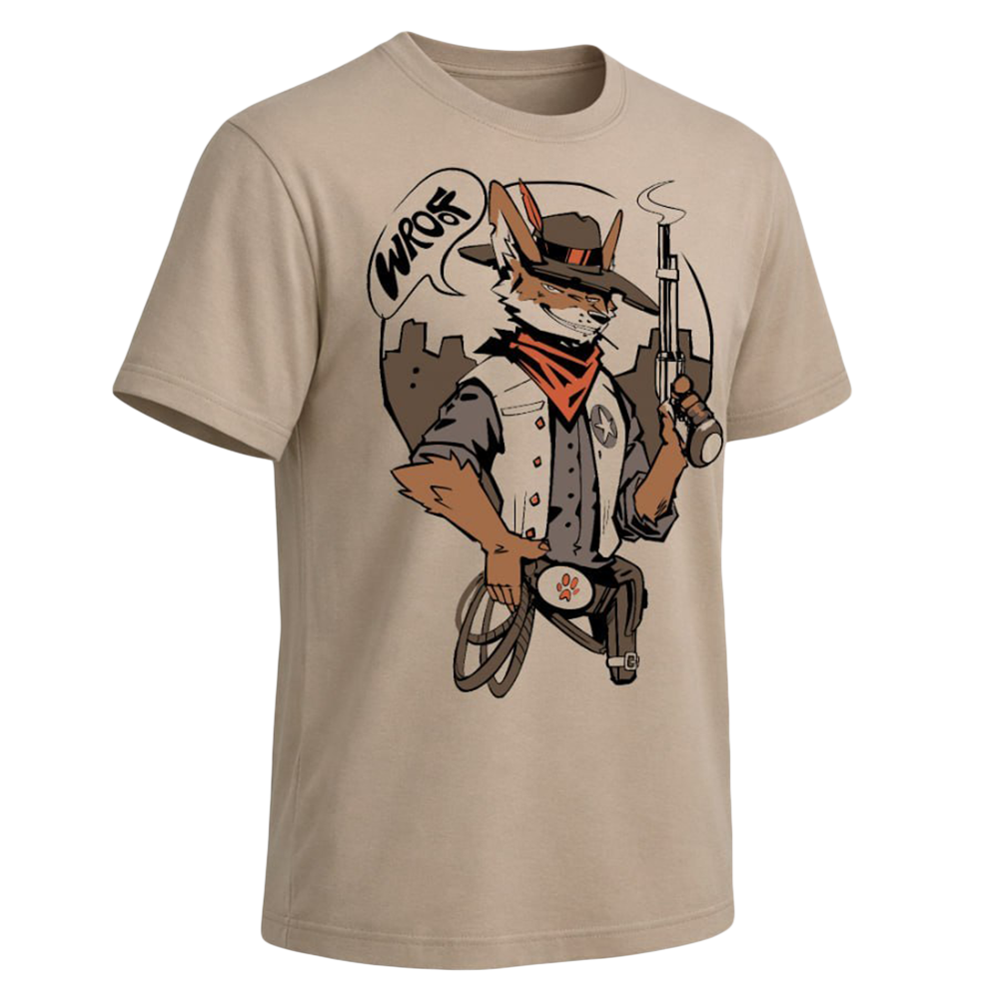

19.09.2026
Czasoprzestrzeń, Tramwajowa 1 - 3, Wrocław
19.09.2026
Czasoprzestrzeń, Tramwajowa 1 - 3, Wrocław


Wroof to konwent społeczności futrzaków połączony z Wrocławskim Furwalkiem, podczas którego osoby z całego kraju spotykają się by spędzać razem czas, bawić się i dzielić wiedzą.
W programie znajdziesz panele, warsztaty, stoiska lokalnych artystów, a przede wszystkim — legendarny fursuitwalk, czyli wielkie, kolorowe przejście przez Wrocław!
W tym roku gości nas Czasoprzestrzeń - zlokalizowana w uwielbianej przez Wrocławian zielonej części miasta, w bezpośredniej okolicy Hali Stulecia i Zoo.
Wybierz typ biletu poniżej, aby zobaczyć podgląd! Darmowy identyfikator dla helperów i twórców programu – jeżeli chcesz go otrzymać, dołącz do ekipy!
Oficjalna koszulka Wroof 2026 — miękka bawełna z grafiką przygotowaną specjalnie na tegoroczną edycję.
Kup w przedsprzedaży · 80 PLN
Wroof tworzycie Wy — dosłownie!
Aby tak wielkie wydarzenie jak Wrocławski Furwalk i Wroof mogły się odbyć, potrzebujemy pomocy wszystkich chętnych! Niezależnie co potrafisz i jakie masz doświadczenie, liczą się przede wszystkim sumienność i chęć do pomocy.
Co roku poszukujemy ekipy, która pomoże nam podczas furwalku i
wydarzenia. Do obowiązków helperów należą między innymi podawanie
fursuiterom wody, prowadzenie przemarszu, rozkładanie stołów i
nadzorowanie punktów programu.
Zostań helperem klikając tutaj!
Nie mniej ważni są sami twórcy programu, którzy są chętni
poprowadzić prelekcje, warsztaty, gry, zabawy, kąciki tematyczne czy
program arystyczny.
Zostań twórcą programu klikając tutaj!
Cała ekipa Wroofa może liczyć na darmową wejściówkę z identyfikatorem sponsorskim, przekąski i napoje podczas wydarzenia oraz umowę wolotariacką.
Jak co roku, możecie spodziewać się całego dnia atrakcji! W programie
znajdziecie warsztaty o fursuitach,
prelekcje związane ze społecznością oraz na inne tematy, koncerty podczas wieczornej imprezy,
strefy czillu, naturalnie
fursuitwalka oraz wiele więcej!
Dokładny rozkład jazdy poznacie bliżej wydarzenia!